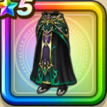

天魔王のローブ下
攻略班 7.5点 / 即死耐性+5%オルゴ・デミーラへの耐性+10%混乱耐性+5%即死耐性+5%混乱耐性+5%【賢者】じゅもんダメージ+2%ドルマ属性じゅもんダメージ+5%
くわしい特徴
【レベル別習得スキル】 Lv1即死耐性+5% Lv5オルゴ・デミーラへの耐性+10% Lv8すばやさ+7 Lv10混乱耐性+5% Lv12【賢者】じゅもんダメージ+2% Lv15ドルマ属性じゅもんダメージ+5% Lv18即死耐性+5% Lv20【賢者】さいだいHP+5 Lv23守備力+7 Lv25混乱耐性+5% 【限界突破スキル】 1凸こうげき魔力+5 2凸すばやさ+7 3凸守備力+5 4凸さいだいHP+10